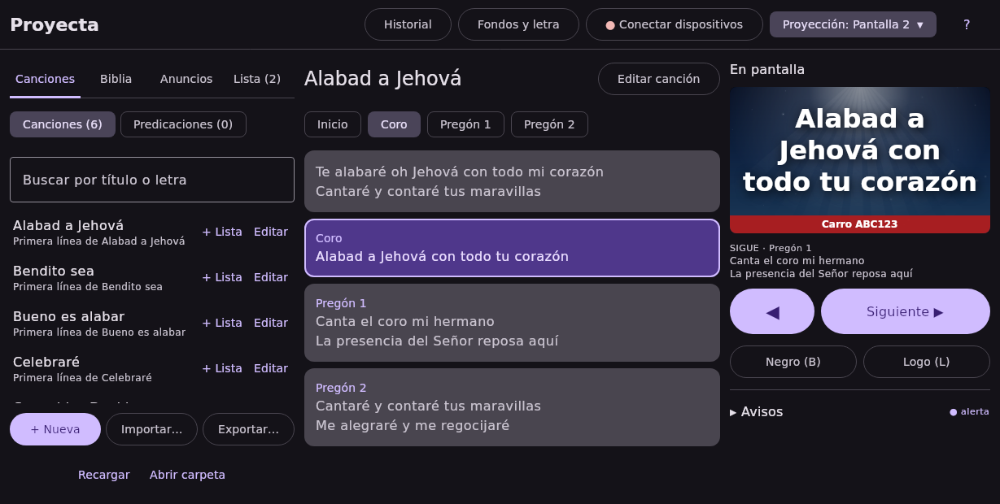

Letras de canciones y la Biblia en el videobeam, controladas desde el computador, una tablet o un celular.

Todos deben estar en el mismo Wi-Fi que el computador.
| Qué pasa | Qué hacer |
|---|---|
| No sale nada en el videobeam | Revisa el cable y que el videobeam esté en la entrada correcta. En Proyecta: Proyección ▾ → elige la pantalla. Si dice «Proyección apagada», presiona F5. |
| La letra sale en la pantalla del computador | Proyección ▾ → elige «Pantalla 2». En Windows, ⊞ Win + P → «Extender». |
| Se ve todo negro | Está en pantalla negra: presiona Esc o el botón «Mostrar». |
| El celular no se conecta | Que esté en el mismo Wi-Fi (no en el de invitados). En la app: «Buscar otro». En el computador, «Conectar dispositivos» debe decir «Windows permite las conexiones»; si no, «Permitir conexiones». |
| Pide una clave | Es la de 4 números en «Conectar dispositivos». Sin ella el celular solo puede mirar. |
| El fondo animado va lento o el computador se calienta | «Fondos y letra» → activa el Modo liviano, o elige un fondo quieto. |
| Un video de anuncio no se ve | Usa un formato común (.mp4). Si sigue sin verse, avisa al encargado (ver «registro» abajo). |
| Se borró una canción o la lista | Botón ? → Respaldos… → Restaurar (se guardan solos cada semana). |
| Aparece «Nueva versión» | Actualiza después del culto, nunca durante: Proyecta se cierra unos segundos. |
[G]Cuán grande es [C]Él.Proyecta — github.com/oscarortega14/proyecta